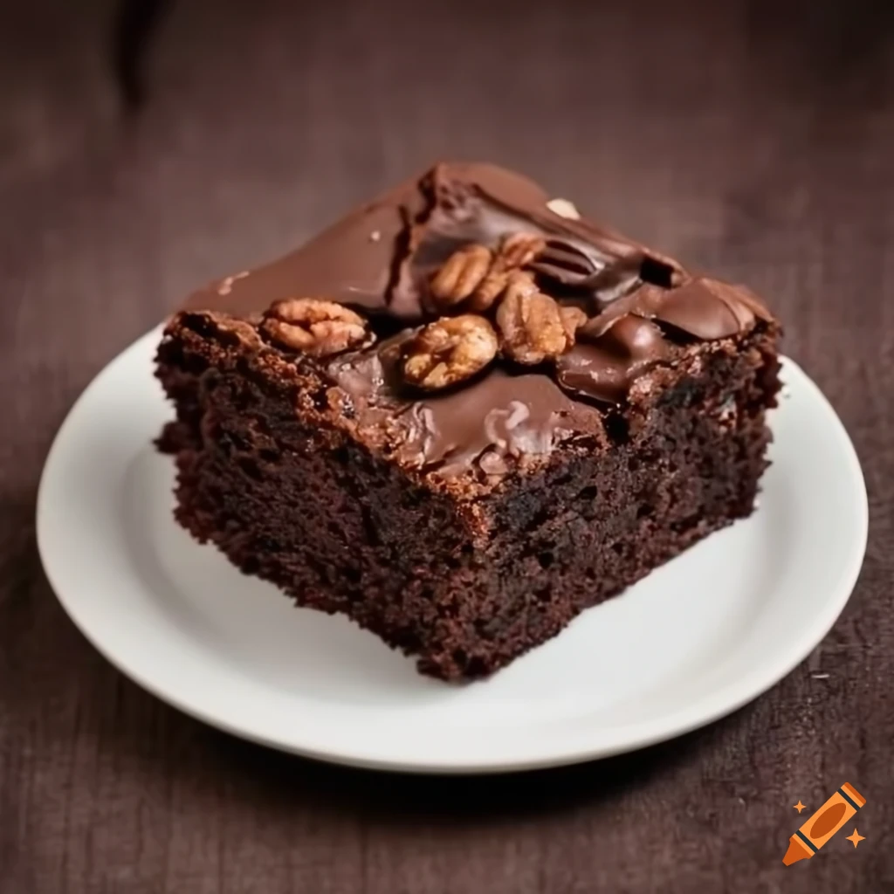

Brownie

These sweet potato brownies are light and moist, loaded with chocolate chips,
and topped with more chips and pecans. You really won't taste the sweet
potato, but it's what gives them their fudgy texture.
Ingredients:
- 3/4 cup all-purpose flour
- 1/2 cup unsweetened cocoa powder
- 1 1/2 teaspoons baking soda
- 1/8 teaspoon salt
- 1 cup unsweetened sweet potato puree
- 3/4 cup packed brown sugar
- 1/2 cup salted butter, melted
- 1 large egg
- 2 teaspoons pure vanilla extract
- 1 1/2 cups semi-sweet chocolate chips, divided
- 1/2 cup chopped pecans (optional)
Directioins:
-
Gather ingredients. Preheat the oven to 325 degrees F (165 degrees C).
Grease a 9x13-inch pan.
-
Whisk together flour, cocoa powder, baking soda, and salt in a bowl; set
aside.
-
Combine sweet potato puree, brown sugar, butter, egg, and vanilla in a large
bowl. Beat with an electric mixer on low speed until smooth.
-
Add flour mixture and mix until just moistened. Fold in 1 cup of the
chocolate chips.
-
Pour batter into the prepared pan. Sprinkle with remaining 1/2 cup chocolate
chips and pecans, if desired.
-
Bake until edges and surface of brownies are set but still soft, about 25
minutes. Cool in pan for at least 30 minutes. For best results, chill at
least 4 hours before cutting.